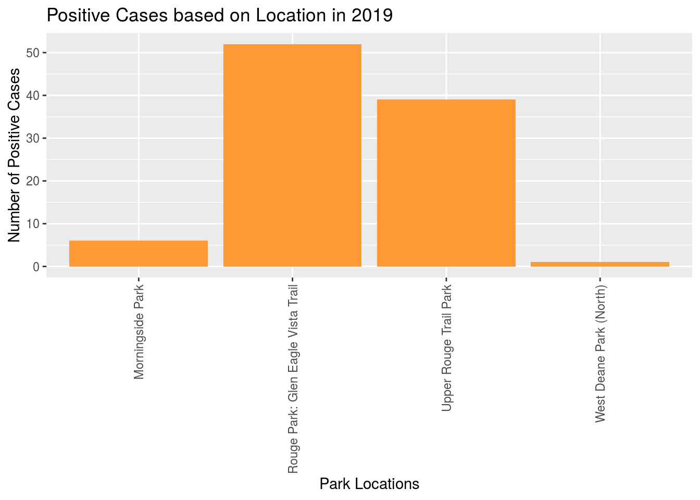
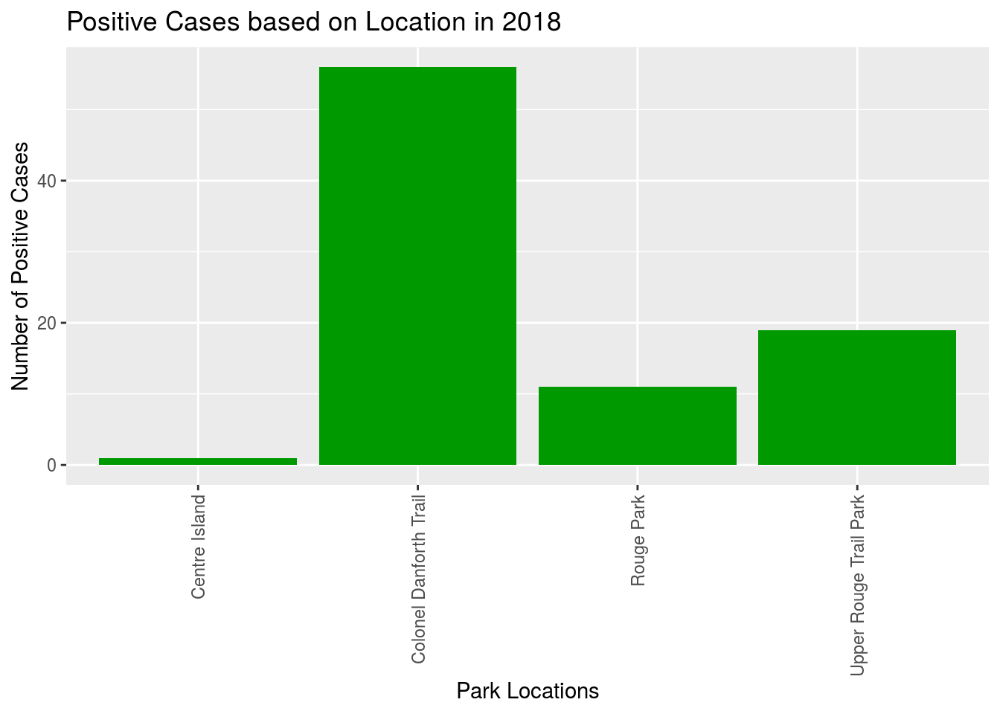

Jennifer Do
2020-09-27
Abstract
Blacklegged Tick Surveillance in Toronto monitors the number of ticks and positive cases of Lyme disease within the city. Here, we explore the Toronto Blacklegged Tick Surveillance dataset from 2013 to 2019. We find that higher numbers of Blacklegged Ticks (BLTs) correspond to higher cases of Lyme disease, particularly around Rouge Park and its associated trails. From our findings, we are able to determine that though rates of tick prevalence and positive cases of Lyme disease have decreased since 2017, areas around Rouge Park have higher likelihoods to exposure to BLTs.
Introduction
Blacklegged Ticks (BLTs) are responsible for carrying the bacteria (Borrelia burgdorferi) which causes Lyme disease. The Toronto tick surveillance program monitors the overall risk of Lyme disease via the process of tick dragging in the spring and fall when adult ticks are active. Blacklegged ticks are often found in parks and trails with wooded and bushy areas, along with tall grasses and leaves.In Toronto, prominent areas of BLT presence include Rouge Park and its associated trails, in addition to Colonel Danforth Trail and Morningside Park. These areas had the highest number of positive BLT-associated Lyme disease cases associated to the number of BLTs from 2013-2019. By determining the living environment of BLTs this may help health workers, and park goers to understand the potential exposures and susceptibility to Lyme disease.
To investigate whether Blacklegged Tick prevalence was increasing or decreasing throughout the years, a bar plot was constructed to visualize its rates. It is observed that numbers of BLTs increased drastically from 2015 to 2016, peaked in 2017 and have declined since. As well, the number of positive cases of Lyme disease is determined by observing a bar plot. A corresponding increase was observed from 2015 to 2016, with the highest rates of confirmed cases also being in 2017. Similarly, there was a decline in cases during subsequent years.The drastic increase in numbers from 2015 to 2016 may be due to the increase in numbers of places which underwent tick dragging in 2016. To determine where the greatest numbers of BLTs are situated, according to year, graphs were created to compare between the total number of BLTs and its location, and the number of positive cases of Lyme disease at various parks. Based on the repeated observation of Rouge Park, Colonel Danforth Trail, and Morningside Park featuring recurring increased numbers of both cases and ticks, graphs were create to observe the rates of both cases and tick population in these areas.
The tick dragging locations were chosen based on suitable habitats and previously confirmed findings of blacklegged ticks. Despite spring and fall seasonal tick dragging efforts, the presence of blacklegged ticks may also still exist in other seasons, and in low numbers at a site previously found to have no ticks. Populations of ticks may also be present outside of the park locations which were surveyed, in other areas of Toronto. Future work may include tick dragging in areas which had not been previously surveyed, and tick dragging monthly rather than seasonally.
Data Discussion
The dataset reviewed incorporated both designed and administrative data. The surveillance of BLTs keeps track of possible outbreak locations, while analysis of the number of positive cases tracks the spread of the Lyme disease. As the dataset showcases discrete variables and presents with categorical data, bar graphs are used.
Graphs
Graph 1
Graph 2
Graph 3

Graph 4
Graph 5

Graph 6
Graph 7
Graph 8
Graph 9

Graph 10
Graph 11
Graph 12
Graph 13
Graph 14
Graph 15
Graph 16
Graph 17
Graph 18
Graph Discussions
In 2017, the number of BLTs were at its highest in the city, and as expected, the number of positive cases for Lyme disease was at its peak, with 65 people testing positive for Lyme disease and 149 ticks found, as seen in Graph 1 & 2. It is expected that between the years of 2013 to 2014, the number of positive cases attributed to ticks is minimal as few park locations were surveyed. Hence, the graphs for the number of BLTs from 2013-2019, and number of positive cases appear to be left skewed and bimodal (Graph 2) . The increase in park location surveillance reflects of the increase in locations of tick presence from 2015-2019, with 2019 having the greatest number of locations of tick presence (Graphs 3 - 12). Between 2016 to 2019, comparisons between tick locations, presence of ticks, and numbers of positive cases, indicated that areas of higher presence of ticks were attributed to greater numbers of positive cases for Lyme disease. Between 2016-2019, areas around Rouge Park, and its associated trails such as Rouge Park:Glen Eagle Vista Trail, and Upper Rouge Trail Park had the highest number of BLTs, and positive cases of Lyme disease. The Colonel Danforth Trail and Morningside Park were also seen to have recurring tick presence between 2015-2019 (Graphs 4, 6, 7, 9, 11). Locations of BLT presence had increased from 2015-2019 (Graphs 13-18). This may be attributed due to more park locations being surveyed. As a result, greater numbers of BLTs were found.
The majority of park locations surveyed between 2013-2019 had found that minimal presence (often no presence) of BLTs and minimal positive cases of Lyme disease (<2 positive cases).
References
Sharla Gelfand (2020). opendatatoronto: Access the City of Toronto Open Data Portal. https://sharlagelfand.github.io/opendatatoronto/, https://github.com/sharlagelfand/opendatatoronto/.
Keller, Sally A., Stephanie S. Shipp, Aaron D. Schroeder, and Gizem Korkmaz, 2020, ‘Doing Data Science: A Framework and Case Study’ Harvard Data Science Review, 2 (1), https://doi.org/10.1162/99608f92.2d83f7f5
Hadley Wickham, Romain François, Lionel Henry and Kirill Müller (2020). dplyr: A Grammar of Data Manipulation. R package version 1.0.2. https://CRAN.R-project.org/package=dplyr
H. Wickham. ggplot2: Elegant Graphics for Data Analysis. Springer-Verlag New York, 2016.
Wickham et al., (2019). Welcome to the tidyverse. Journal of Open Source Software, 4(43), 1686, https://doi.org/10.21105/joss.01686